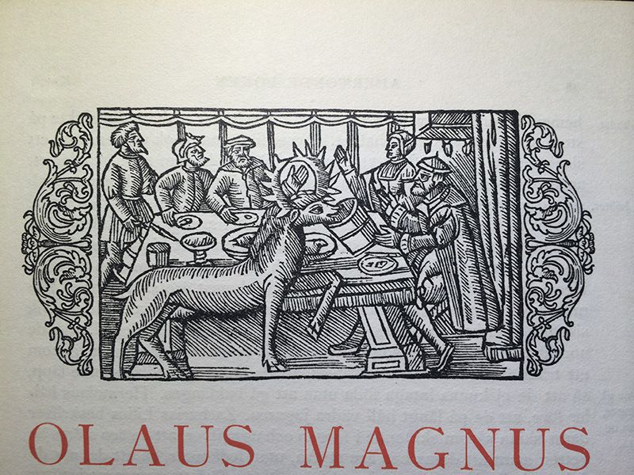
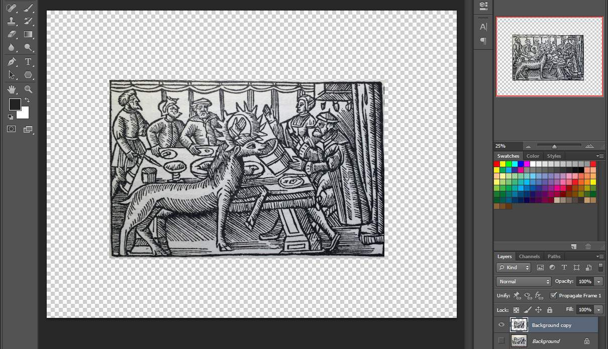
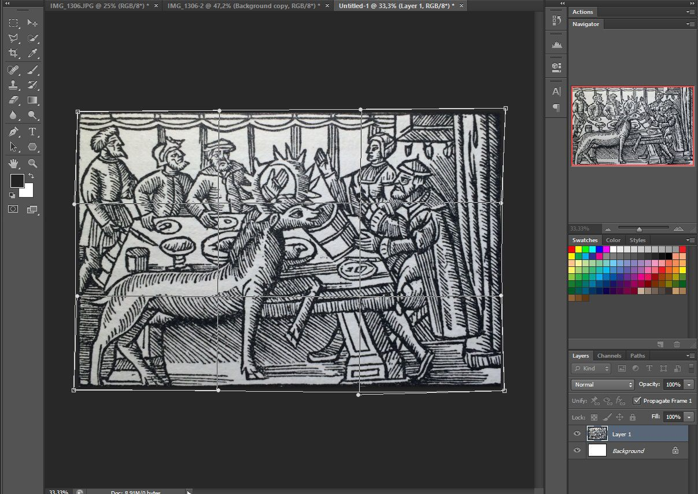
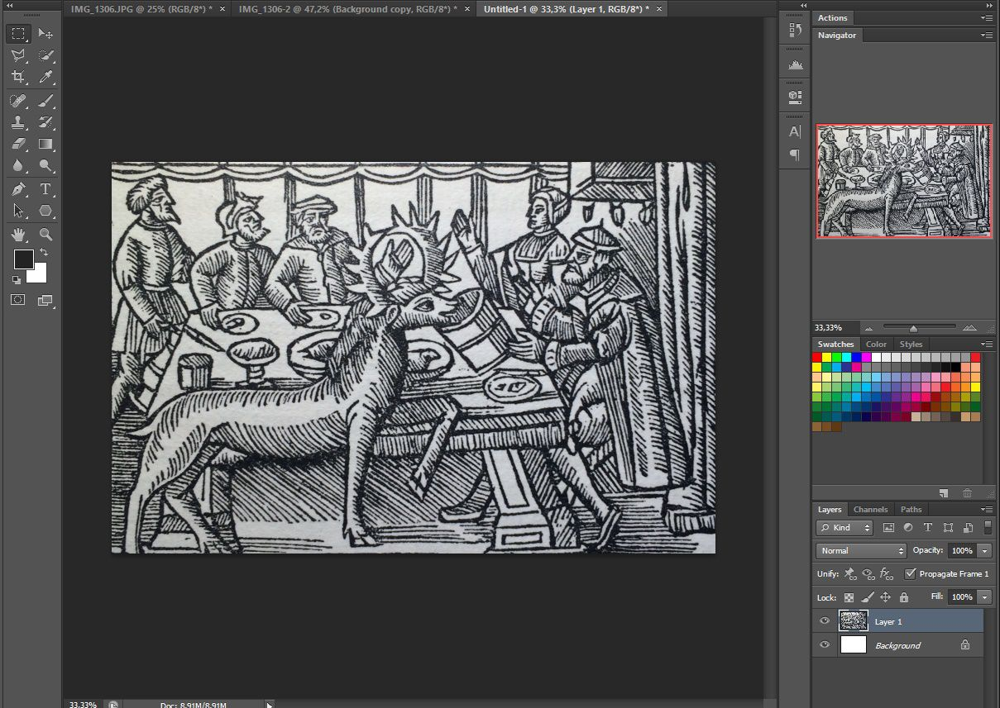
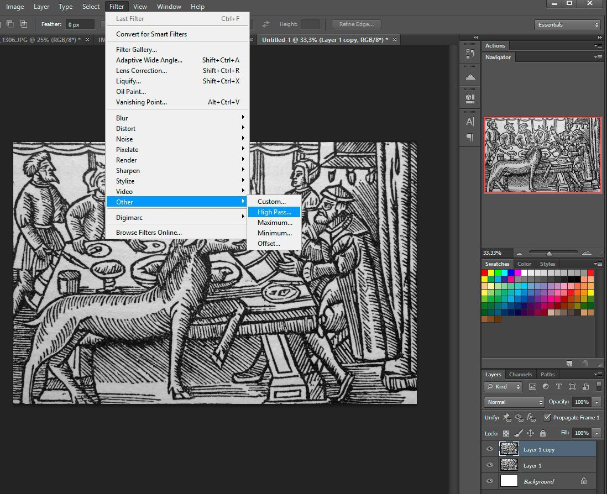
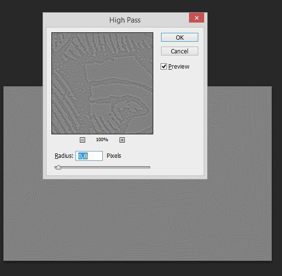
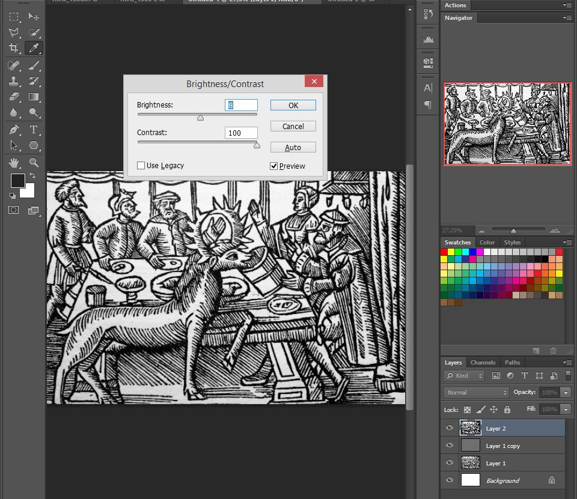
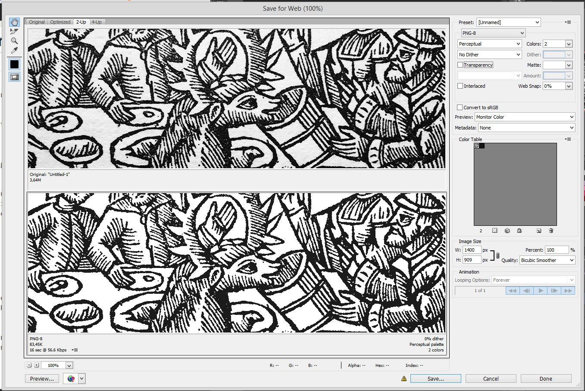
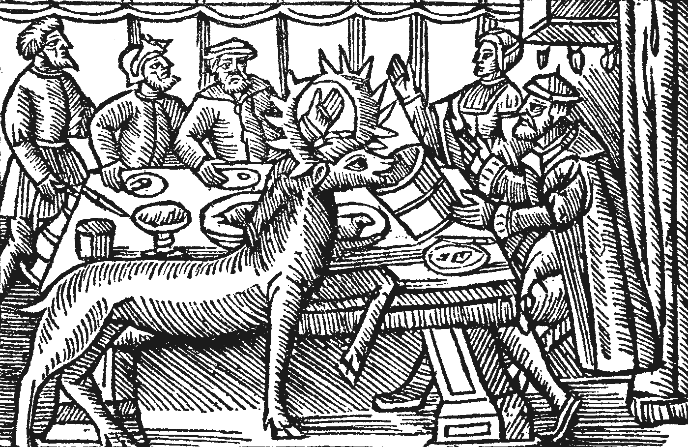

From woodcut to vector graphics
A while ago I started digitizing a book by Olaus Magnus from 1555 - History of the Northern Peoples. This book explains in great detail how the people in Scandinavia lived and what they believed in. In between stories of rats taking over entire cities in Europe and descriptions of great serpents in the Norwegian seas, you find recipes of mead and get to know that elks drank beer.
We all know that reading books without images is really boring. Luckily, this book has illustrations here and there for you to enjoy and ponder about. These illustrations are nicely crafted woodcuts.
As I wanted my digitalization of this old book to work great on all screen sizes; I decided to make the images SVG and the website responsive. Serving a file at approximately 150 kB for each post might be a bit overkill; a solution with rendered bitmaps for different sizes would be a better solution - and might be the way I go about doing it in the future. But for now, I'll go with SVG. Here's the story of how I created an SVG for the web from a woodcut in a really old book.
From paper to file

I started out by taking an image of the woodcut image with my iPhone. After making sure the lighting was not too bad I snapped a picture and then it was time for some magic in Photoshop.
Editing the image in Photoshop
I started out by cropping the image. Removing the bloated content around the actual woodcut. I also decided to remove the decoration around the woodcut since it doesn't really fit that nice on a website - and it takes up extra space. The borders are going away as well.
Cropping the image

After removing content around the woodcut I made sure to straighten the border lines to get a more correct representation of the original woodcut. I did this by transforming and warping the image.

The border around the woodcut itself is going to be removed too. It will be added later with CSS on the page. Below is the image after cropping and transforming.

After cropping I decreased the size of the image to a width of 800 pixels. The resolution you choose will have an impact of the quality and size of the final SVG file.
Increasing detail
For best compatibility and smallest size, the final vector image has to have black paths and transparent background. Later, a tool will trace the paths in the bitmap based on what's black and white. So the first thing I did after cropping was to increase the contrast of the image to get clear differences of blacks and whites.
First of I did CTRL + SHIFT + U to desaturate the image - loosing some of the yellowish colour of the paper and the lightning. The I created a new layer and added a High Pass filter.

Then I made sure to get a faint glow around the the blacks before hitting "OK".

Then I set the Blend Mode of the Layer to "Overlay". This overlays the the image above to original creating slightly more detail around the black lines.
Next up; more contrast. Under Image > Adjustments you'll find "Brightness/Contrast". I tweaked this until I was quite happy with the result - creating some more difference between the black and whites.

Exporting the image
The tool which traces the lines and creates the vector image wants a can handle the following bitmap formats: PBM, PGM, PPM (also known as PNM) and BMP.
We will not go ahead and save the image in any of these formats yet though. First we'll export a PNG file using "Save for Web...".

I'm using PNG-8 with 2 colors to get only black and white colors in the exported image.
From raster to vector

This is what the exported raster image from Photoshop looks like. It has some rough edges but it will be fixed when the image is ran through the tool which will convert the image to vector.
Potrace
Potrace is made by Peter Selinger and "is a tool for tracing a bitmap, which means, transforming a bitmap into a smooth, scalable image.".
As mentioned earlier. Potrace can handle PBM, PGM, PPM and BMP files. Mkbitmap is a tool bundled with Potrace which pre-processes the input to get better tracing behaviour.
Preprocessing the input
I'll open my exported PNG in Photoshop to export it as a BMP file.
Then I simply drag and drop that BMP file on the mkbitmap.exe file. This will convert the image into a PBM file, ready to be run through Potrace.
Processing the image
Potrace is the magic tool which converts the bitmap into a vector. There are plenty options to choose from, but I'll focus on exporting a SVG file.
I created my own CMD file with the following contents:
potrace.exe %1 -s --flat --tight
pause
- --flat makes the whole image as a single path.
- --tight removes whitespace around the input image.
- -s tells Potrace to make export SVG.
- %1 tells the command line to use the file dropped on the CMD file.
This little CMD file will generate a SVG file when you drop a file on it.
Potrace generated the following SVG:
I like removing the width and height attributes from the svg element. Since there is a viewBox attribute present, the image proportions are kept and scaling is done nicely when you resize the SVG in the browser.
Potrace also has some other great options. You can control the algorithm options and change curves and so on.
Optimizing the SVG
There are plenty of tools to optimize the SVG file when it's done. I use SVG Cleaner.
After removing the width and height attributes from the svg element in the file and optimizing the file with SVG Cleaner, I am left with 359 kB sized SVG file.
To sum it up
By using Potrace you can, without too much work, create a vector image from a photo of a woodcut. Depending on how much time you spend tweaking and playing around with both Photoshop and Potrace, you'll get very varying results and probably end up with a great little way of your own to do this with your very own settings and tweaks.
I hope this post was of use to you.